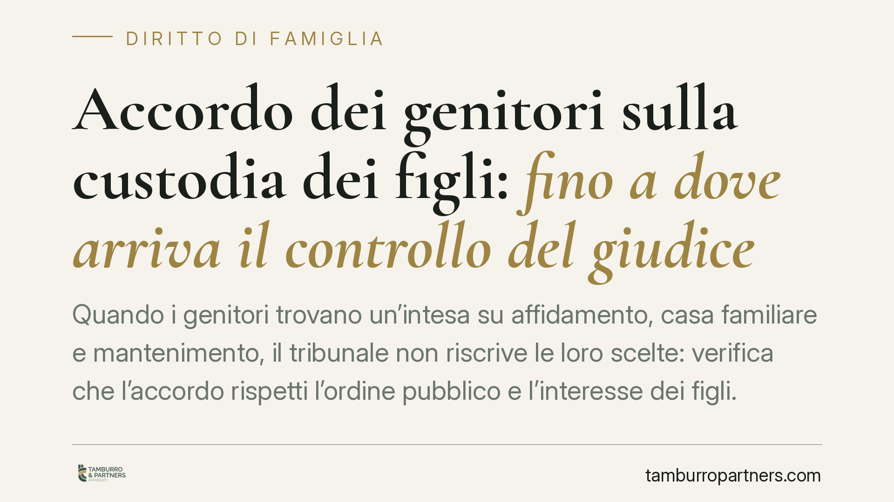

Accordo dei genitori sulla custodia dei figli: fino a dove arriva il controllo del giudice
Quando i genitori trovano un'intesa su affidamento, casa familiare e mantenimento, il tribunale non riscrive le loro scelte: verifica che l'accordo rispetti l'ordine pubblico e l'interesse dei figli. È un principio consolidato che, nel rito unificato della riforma Cartabia, conserva un preciso perimetro. Vediamo cosa significa in concreto per chi affronta una separazione consensuale con minori coinvolti.

Il principio: recepire, non sostituire
Quando due genitori raggiungono un'intesa completa sulle questioni che riguardano i figli, il ruolo del giudice non è quello di rifare le scelte, ma di controllarne la legittimità. In presenza di un accordo su affidamento condiviso, assegnazione della casa familiare, mantenimento diretto e ripartizione delle spese straordinarie, il tribunale opera una verifica di conformità: valuta se le pattuizioni ledano l'ordine pubblico o l'interesse dei minori.
È una distinzione decisiva. Il controllo di conformità non è un riesame nel merito. Il giudice non entra nel merito dell'opportunità delle scelte concordate — non stabilisce, ad esempio, se sarebbe "meglio" un diverso calendario di frequentazione — ma interviene solo se emerge un contrasto con norme inderogabili o un pregiudizio concreto per il minore.
L'inquadramento normativo
Dal 28 febbraio 2023 la materia è governata dal rito unificato in materia di persone, minorenni e famiglie, introdotto dal D.Lgs. 149/2022 (riforma Cartabia) e disciplinato dagli artt. 473-bis e seguenti c.p.c.
Due elementi meritano precisione, perché la posizione del minore nel processo è più articolata di quanto una lettura superficiale suggerisca.
Primo: l'ascolto del minore. L'art. 473-bis.4 c.p.c. impone l'ascolto del minore che abbia compiuto dodici anni, e anche di età inferiore ove capace di discernimento, salvo che l'ascolto sia in contrasto con il suo interesse o manifestamente superfluo. L'ascolto è parte integrante del controllo giudiziale: consente al giudice di verificare che l'accordo dei genitori rispecchi davvero l'interesse del figlio.
Secondo: il curatore speciale. Nei casi previsti dall'art. 473-bis.8 c.p.c. (che richiama l'art. 78 c.p.c.), quando emerge un conflitto di interessi anche solo potenziale tra genitori e figlio, il giudice nomina un curatore speciale del minore. Non si tratta quindi di un soggetto privo di tutela processuale: il minore dispone di strumenti di rappresentazione e di ascolto propri.
Quanto al Pubblico Ministero, il suo intervento nei procedimenti che coinvolgono minori è previsto dalle disposizioni del rito unificato ed è funzionale alla tutela dell'interesse pubblico e del minore. Il PM può esprimere il proprio parere sull'accordo; non è un passaggio meramente formale, ma un ulteriore filtro di legalità.
> Nota sulla fonte. La pronuncia da cui muove questa riflessione (attribuita al Tribunale di Bologna) va verificata quanto a numero, sezione e data di deposito prima di ogni utilizzo processuale. Il principio esposto, in ogni caso, è coerente con l'orientamento consolidato e con l'impianto della riforma.
Cosa cambia per i genitori
Per chi affronta una separazione o una regolamentazione dei rapporti tra genitori non coniugati, il messaggio è chiaro: un accordo ben costruito ha ottime probabilità di essere recepito, perché il giudice tende a rispettare l'autonomia delle parti quando questa non pregiudica i figli.
Da qui l'importanza di redigere pattuizioni precise. Un punto ricorrente riguarda la differenza tra spese ordinarie e straordinarie.
Le spese ordinarie sono quelle ricorrenti e prevedibili, comprese di norma nell'assegno di mantenimento o nel mantenimento diretto (vitto, abbigliamento ordinario, materiale scolastico corrente). Le spese straordinarie sono quelle imprevedibili, occasionali o di importo rilevante (interventi sanitari non urgenti, attività sportive continuative, viaggi di istruzione, tecnologie costose). Confondere le due categorie è una delle prime fonti di contenzioso post-accordo.
Cosa fare in concreto
- Definite un elenco chiaro delle spese straordinarie, indicando quali richiedono previo accordo scritto e quali sono automaticamente ripartite. La genericità genera lite.
- Specificate le modalità del mantenimento diretto, se scegliete questa forma: chi paga cosa, con quali tempi e con quali giustificativi.
- Regolate in dettaglio l'assegnazione della casa familiare, indicando presupposti e durata, per evitare interpretazioni divergenti.
- Predisponete un accordo compatibile con l'interesse del minore, tenendo conto della possibilità di ascolto: soluzioni realistiche e sostenibili nel tempo superano più agevolmente il vaglio del giudice.
- Rivolgetevi a un professionista prima di depositare: consigliamo di far verificare la conformità delle clausole al rito unificato, così da ridurre il rischio di rilievi in udienza.
Un accordo curato riduce i tempi e il contenzioso futuro. Il tribunale non promette di approvare qualsiasi intesa, ma quando l'accordo è equilibrato e rispetta l'interesse dei figli, la strada del recepimento è quella ordinaria.
---
Contributo informativo a cura di Tamburro & Partners — Avv. Giuseppe Tamburro. Non costituisce parere legale.
Ogni famiglia ha il suo equilibrio.
Separazione, divorzio, affidamento, assegno: se vuoi un confronto riservato su una specifica situazione, scrivi allo studio. Ti rispondiamo entro un giorno lavorativo.